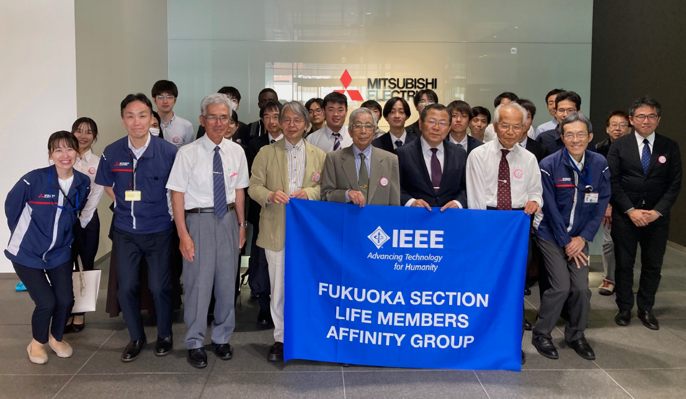

Activities: 活動予定および報告
2025年
|
【共催】「安川電機ロボット村見学会」
【主催】 IEEE Fukuoka Section Life Member Affinity Group (LMAG)
2025年12月15日(月)(
開催地/安川電機ロボット村 |

|
【主催】 IEEE Kansai Section Young Professionals Affinity Group
2025年12月13日(日)
開催地/立命館大学 いばらきキャンパス |

|
【主催】 IEEE Japan SYWL Workshop 実行委員会, IEEE Japan Council
2025年12月13日(日)
開催地/立命館大学 いばらきキャンパス |
|
【後援】「IEEE Industry Engagement Workshop (IEW) in Kansai 2025 」
【主催】 IEEE Japan Council, Industry Promotion Committee, IEEE 関西支部
2025年12月12日(土)
開催地/立命館大学梅田キャンパス多目的室 ＋ オンライン |

|
【主催】 IEEE Nagoya Section Young Professionals Affinity Group
2025年11月30日(日)
開催地/STATION Ai M3階 大会議室１ |

|
【主催】 Kyushu University Student Branch and Hiroshima-Shikoku-Fukuoka Young Professionals
2025年09月30日(火)
開催地/九州大学 総合学習プラザ大7講義室（ハイブリッド） |
|
【共催】「学生交流会＠高知大学」
【主催】 電気情報通信学会
2025年09月27日(土)
開催地/高知大学朝倉キャンパス 生協食堂 |
|  |
【共催】「三菱電機パワーデバイス製作所＠福岡支部」
【主催】 IEEE Fukuoka LMAG
2025年05月19日(月)
開催地/三菱電機パワーデバイス製作所 in 福岡 |
|
【主催】 Sapporo YP,Tokyo YP
2025年05月24日(土)
開催地/国立大学法人 室蘭工業大学/対面のみ |
2024年
|
【共催】 IEEE 広島四国福岡 YP、IEEE Student Branch 九州大学
2024年09月30日(月)
開催地/九州大学/オンライン |
|
2024年09月25日(水)
開催地/マツダミュージアム 広島市 |
|
【共催】 電気学会、情報処理学会、IEEE、映像情報メディア学会、照明学会
電気設備学会、計測自動制御学会、IEEE YP
2024年09月21日(土)
開催地/徳島大学 常三島キャンパス 生協食堂 |

|
【主催】 Japan Council, Tokyo Section
2024年08月29日(木)~09月01日(日)
開催地/国立オリンピック記念青少年総合センター |
|
【主催】 IEEE Sendai Young Professionals Affinity Group IEEE Kansai Young Professionals Affinity Group
2024年05月18日(土) 10:30～16:30
開催地/東北大学 青葉山東キャンパス 情報科学研究科棟 中講義室 |
2023年

|
【主催】 Japan Council, Shin-estu Section
2023年11月24日(金) 12:30～16:50
開催地/信州大学長野(工学)キャンパス |
|
【主催】 IEEE関西YP, JC YP
2023年11月12日(日) 13:00～16:30
開催地/アクリエひめじ |
|

|
2023年09月22日（金）09:20 〜 17:00
開催地/STNet Powerico， 高松市 |
|
【主催】 IEEE Fukuoka Section, IEEE四国・福岡・広島WIE
2023年09月08日(金) 14:00～16:30
開催地/崇城大学 SoLA 3階 SoLAホール |
|
|
【主催】 IEEE名古屋支部YP, IEEE関西支部YP
【共催】 豊田自動織機, IEEE Japan Council
2023年04月22日(土) 14:10～15:30
開催地/ナゴヤ イノベーターズ ガレージ/オンライン |
|
|
【共同主催】 IEEE仙台支部YP
2023年3月11日(土) 15:00～19:30
開催地/広島市立大学サテライトキャンパス/オンライン(Microsoft Teams) |
2022年

|
【共催】 ：IEEE広島支部，IEEE四国支部，IEEE福岡支部，IEEE四国・福岡・広島WIE，IEEE Japan Council Educational Activities (EA) Group，広島市立大学
【後援】 IEEE EA 広島，IEEE EA 四国，IEEE EA 福岡
2022年11月12日(土) 13:00～13:45
開催地/広島市立大学/オンライン(Zoom Webinar) |

|
【共同主催】 広島市立大学
【共催】 IEEE広島支部，IEEE四国支部，IEEE福岡支部，IEEE四国・福岡・広島WIE，IEEE Japan Council Educational Activities (EA) Group
【後援】 IEEE EA 広島，IEEE EA 四国，IEEE EA 福岡，広島 市教育委員会，広島県教育委員会
2022年11月12日(土) 14:10～15:30
開催地/広島市立大学/オンライン(Zoom Webinar) |

|
【主催】 IEEE関西YP, 他
2022年10月09日(日) 09:45～19:30
開催地/大阪工業大学 梅田キャンパス |
|
2022年10月08日（土）14:00 〜 17:00
開催地/酒造 ナルトタイの店， 徳島市 |
|
|
|
2022年5月7日(土)
|